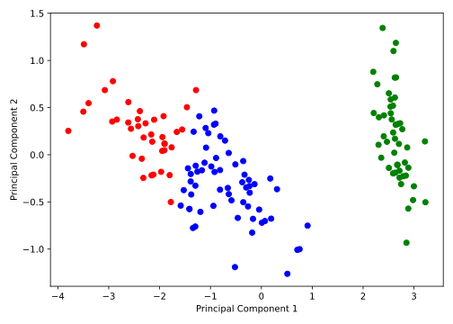

Unüberwachtes Lernen
Bisher haben wir stets Daten betrachtet, die aus Datenpaaren für bestanden, wobei ein Featurevektor und ein quantitatives (Regression) oder qualitatives (Klassifikation) Label oder Target war. Beim so genannten unüberwachten Lernen hingegen fehlt diese zweite Information und wir haben lediglich Datenpunkte zur Verfügung. Dabei interessieren uns insbesondere die Dimensionsreduktion oder das Clustering der Datenpunkte.
Dimensionsreduktion
Unter Dimensionsreduktion verstehen wir die Transformation der Daten in einen Raum niedrigerer Dimension mit möglichst geringem Informationsverlust. Dazu könnten wir uns z.B. am Beispiel des Wine Quality Datensatzes fragen, ob wir zur Beschreibung der Daten anstatt allen 11 Features auch weniger verwenden können. Zudem sind manche der Features möglicherweise stark korreliert und somit überflüssig. Mit der Hauptkomponentenanalyse (PCA) haben Sie in Kapitel (4.3) bereits die wichtigste Methode zur Dimensionsreduktion kennengelernt, welche die Daten durch die Hauptkomponenten der größten Varianz beschreibt. Mit der Hauptkoordinatenanalyse (PCoA) aus Kapitel (4.4) kennen Sie zudem eine Methode zur Dimensionsreduktion, die auf Ähnlichkeiten zwischen den Datenpunkten basiert. Wir werden daher nur kurz auf die Implementierung der PCA eingehen, die wir hier als Klasse definieren wollen.
Häufig werden Methoden des überwachten und unüberwachten Lernens kombiniert oder nacheinander angewendet. So kann z.B. ein hochdimensionaler Datensatz zunächst mit PCA auf wenige Dimensionen reduziert werden, bevor ein Klassifikator darauf trainiert wird oder Clustering durchgeführt wird.
PCA Implementierung
Wir haben bereits diskutiert, dass die Hauptkomponenten der Datenmatrix durch die rechtsseitigen Singulärvektoren der Singulärwertzerlegung
gegeben sind. Unter der Annahme, dass unsere Features linear unabhängig sind, können wir ausnutzen, dass den Eigenvektoren der so genannten (empirischen) Kovarianzmatrix der (zentrierten) Datenmatrix entsprechen:
wobei Sie die letze Gleichung an die Eigenwertzerlegung erinnern sollte. Die PCA wird also durch die folgenden Schritte beschrieben:
- Normalisieren (bzw. Standardisieren) der Datenmatrix .
- Berechnen der Eigenvektoren und Eigenwerte von .
- Behalten der Eigenvektoren mit den größten Eigenwerten, gegeben als Matrix .
- Transformieren der Datenmatrix in den Raum der Hauptkomponenten durch .
Wir werden die PCA nun als Klasse implementieren, wobei wir die Berechnung der Hauptkomponenten
als Methode fit und die Transformation der Daten als Methode transform bzw. fit_transform
implementieren wollen. In der __init__ Methode initialisieren wir zunächst die Dimension
der Projektion:
import numpy as np
import matplotlib.pyplot as plt
import pandas as pd
class PCA:
def __init__(self, n_components=2):
self.n_components = n_components
self.components = None
self.explained_variance = None
Dann bestimmen wir die Hauptkomponenten durch Eigenwertzerlegung der Kovarianzmatrix:
def fit(self, X):
# Center the data
X_centered = X - np.mean(X, axis=0)
# Compute the covariance matrix
cov_matrix = np.cov(X_centered, rowvar=False)
# Compute the eigenvalues and eigenvectors
eigenvalues, eigenvectors = np.linalg.eigh(cov_matrix)
# Sort the eigenvalues and corresponding eigenvectors in descending order
sorted_indices = np.argsort(eigenvalues)[::-1]
eigenvalues = eigenvalues[sorted_indices]
eigenvectors = eigenvectors[:, sorted_indices]
# Store the top n_components eigenvectors (principal components)
self.components = eigenvectors[:, :self.n_components]
# Calculate the explained variances
self.explained_variance = eigenvalues[:self.n_components] / np.sum(eigenvalues)
Anschließend können wir die Daten transformieren. Da wir die Berechnung der Hauptkomponenten
und die Transformation der Daten voneinander unabängig halten wollen, implementieren wir
diese als separate Methoden. In fit_transform werden dann beide Methoden aufgerufen:
def transform(self, X):
# Project the data onto the principal components
X_centered = X - np.mean(X, axis=0)
return np.dot(X_centered, self.components)
def fit_transform(self, X):
# Fit the model and return the transformed data
self.fit(X)
return self.transform(X)
Wir wenden die PCA auf den Iris Datensatz an, der Informationen über die Länge und Breite von Kelch- und Blütenblättern von drei verschiedenen Schwertlilien-Arten (also Blumen) enthält:
# Import Iris dataset
csv_url = 'https://archive.ics.uci.edu/ml/machine-learning-databases/iris/iris.data'
col_names = ['Sepal_Length', 'Sepal_Width', 'Petal_Length', 'Petal_Width', 'Class']
df = pd.read_csv(csv_url, names=col_names)
# Show the first few rows
print(df.head())
# Convert class labels to integers
df['Class'] = df['Class'].astype('category').cat.codes
# Define data matrix and labels
X = df.drop('Class', axis=1).to_numpy()
y = df['Class'].to_numpy()
# Perform PCA
pca = PCA(n_components=2)
X_pca = pca.fit_transform(X)
# Plot projected data and color-code by class
fig, ax = plt.subplots(figsize=(7, 5))
ax.scatter(X_pca[y == 0, 0], X_pca[y == 0, 1], color='blue', label='Iris-setosa')
ax.scatter(X_pca[y == 1, 0], X_pca[y == 1, 1], color='red', label='Iris-versicolor')
ax.scatter(X_pca[y == 2, 0], X_pca[y == 2, 1], color='green', label='Iris-virginica')
ax.set_xlabel('Principal Component 1')
ax.set_ylabel('Principal Component 2')
ax.legend()
fig.tight_layout()
plt.show()
Dabei erhalten wir die folgende Abbildung:

Clustering
Unter Clustering verstehen wir die Gruppierung von Datenpunkten in Cluster, wobei die Datenpunkte innerhalb eines Clusters möglichst ähnlich und zwischen den Clustern möglichst verschieden sein sollen. Dazu betrachten wir im Folgenden den so genannten k-Means Algorithmus, der auch als Lloyd’s Algorithmus bekannt ist.
-Means Clustering
Gegeben seien wie zuvor Datenpunkte , welche wir in eine vorgegebene Anzahl von Clustern gruppieren möchten. Wir beginnen zunächst mit einer Wunschliste der Eigenschaften, die wir von einem Clustering-Algorithmus erwarten:
- Eine allgemeine Zuweisungsregel, die jedem Datenpunkt einen Cluster zuordnet, d.h. für .
- Eine Rekonstruktionsregel, die für jedes Cluster ein repräsentatives Element bestimmt, d.h. für .
Dabei bezeichnen wir auch als Mittelwert des Clusters . Um den -Means Algorithmus zu formulieren, fixieren wir zunächst die Anzahl der Cluster und definieren zwei Größen, und . Die Cluster-variable enthält die Teilmengen der Datenpunkte, die dem Cluster zugeordnet sind, während die Mittelwerte der Cluster enthält. Die Vereinigung der Cluster muss dabei die gesamte Datenmenge ergeben, d.h. und für , d.h. ein Datenpunkt kann nicht gleichzeitig mehreren Clustern zugeordnet sein. Der -Means Algorithmus ist ein iteratives Verfahren, welches die Cluster-Variable und die Mittelwerte abwechselnd akualisiert. Für ein initiales Clustering wird dabei zunächst der Mittelwert jedes Clusters als der Mittelwert der Datenpunkte in diesem Cluster berechnet:
wobei die Anzahl der Datenpunkte im Cluster bezeichnet. Dies entspricht der Rekonstruktionsregel. Anschließend werden die berechneten Mittelwerte festgehalten und die -te Gruppe als diejenige Menge von Datenpunkten definiert, die dem Mittelwert näher ist als jedem anderen Mittelwert für . Formal ausgedrückt bedeutet das:
was der Zuweisungsregel entspricht. Diese beiden Schritte werden dann iterativ für eine vorgegebene Anzahl von Iterationen wiederholt, oder bis sich die Cluster nicht mehr ändern. Für Daten in ist in der folgenden Abbildung ein Beispiel für den -Means Algorithmus dargestellt:

Eine andere Blickweise auf die durch den -Means Algorithmus zugeteilten Cluster stellen übrigens die so genannten Voronoi-Zellen dar, die als
definiert sind und in Voronoi-Diagrammen dargestellt werden können:
Wir implementieren auch den -Means Algorithmus als Klasse. In der __init__ Methode
initialisieren wir die Anzahl der Cluster und die maximale Anzahl an Iterationen. Zudem
setzen wir die Variablen self.centroids und self.labels, die im Laufe des Algorithmus
abwechselnd aktualisiert werden:
class KMeans:
def __init__(self, n_clusters=3, num_iter=300):
self.n_clusters = n_clusters
self.num_iter = num_iter
self.centroids = None # array of shape (n_clusters, n_features)
self.labels = None # array of shape (n_points)
Dann implementieren wir die Methode fit, die den Algorithmus wie oben beschrieben
ausführt. Nachdem wir zufällig ausgewählte Datenpunkte als Mittelwerte self.centroids
der Cluster initialisiert haben, berechnen wir in einer Schleife die Zuweisungen und Mittelwerte
der Cluster:
def fit(self, X):
# Randomly initialize centroids
random_indices = np.random.choice(X.shape[0], self.n_clusters, replace=False)
self.centroids = X[random_indices]
for i in range(self.num_iter):
# Assign labels based on closest centroid
self.labels = self.assign_labels(X)
# Calculate new centroids from the means of the points
self.centroids = self.compute_centroids(X)
Hier haben wir angenommen, dass wir die Methoden assign_labels und compute_centroids
noch implementieren werden. Dabei sei noch einmal darauf hingewiesen, dass wir auf
die Variablen self.centroids und self.labels innerhalb der Methoden der Klasse zugreifen können,
da diese als Klassenattribute definiert sind. Die Methode assign_labels berechnet zunächst die
Distanzen aller Datenpunkte zu allen Mittelwerten. Dazu erweitern wir die Datenmatrix X um eine
zusätzliche Dimension, also X.shape = (n_points, 1, n_features), um die Abstandsvektoren zu den
Mittelwerten self.centroids, die die Form (n_clusters, n_features) haben, zu berechnen. Die
Subtraktion der beiden Arrays führt also zu einem Array der Form (n_points, n_clusters, n_features).
Die Distanz erhalten wir dann durch die Berechnung der euklidischen Norm entlang der letzten Achse
(axis=2). Der Array distances speichert also für alle Datenpunkte die Distanzen zu den
Mittelwerten. Die Zuweisung erfolgt demnach durch die Auswahl des Clusters mit dem kleinsten Abstand
für jeden Datenpunkt, was mit der numpy Funktion argmin realisiert werden kann:
def assign_labels(self, X):
# Calculate the distance between each point and each centroid
distances = np.linalg.norm(X[:, None, :] - self.centroids, axis=2)
# Assign the nearest centroid to each point
return np.argmin(distances, axis=1)
Die Berechnung der Mittelwerte ist vergleichsweise einfach, da wir ledigleich für jedes Cluster die Mittelwerte der Datenpunkte des -ten Clusters berechnen müssen und in einem Array speichern müssen. Dazu nutzen wir List-Comprehension:
def compute_centroids(self, X):
# Calculate new centroids as the mean of all points assigned to each centroid
return np.array([np.mean(X[self.labels == i], axis=0) for i in range (self.n_clusters)])
def predict(self, X):
# Assign labels to new data points based on the current centroids
return self.assign_labels(X)
Um dem Konzept der allgemeinen ML-Klasse treu zu bleiben, implementieren wir auch die Methode
predict, die die Zuweisungen für ggf. neue Datenpunkte berechnet.
Wir testen unsere Implementierung des -Means Algorithmus anhand der Projektion des Iris Datensatzes auf die zwei Hauptkomponenten, die wir zuvor mit der PCA berechnet haben:
# Define hyperparameters
n_clusters = 3
num_iter = 100
# Perform K-means clustering
kmeans = KMeans(n_clusters=n_clusters, num_iter=num_iter)
kmeans.fit(X_pca)
# Extract the predicted labels
y_pred = kmeans.predict(X_pca)
# Plot the data points, color-coded by the predicted labels
fig, ax = plt.subplots(figsize=(7, 5))
ax.scatter(X_pca[y_pred == 0, 0], X_pca[y_pred == 0, 1], color='blue')
ax.scatter(X_pca[y_pred == 1, 0], X_pca[y_pred == 1, 1], color='red')
ax.scatter(X_pca[y_pred == 2, 0], X_pca[y_pred == 2, 1], color='green')
ax.set_xlabel('Principal Component 1')
ax.set_ylabel('Principal Component 2')
fig.tight_layout()
plt.show()
Dabei erhalten wir die folgende Abbildung, wobei wir die vorhergesagten Cluster durch die Farben der Punkte darstellen:

Ohne Beachtung der korrekten Farben erkennen wir durch Vergleich der tatsächlichen Labels von oben, dass die drei Cluster mit hinreichender Genauigkeit den korrekten Schwertlilien-Arten zugeordnet werden konnten. Dabei sei nochmal angemerkt, dass es sich bei Clustering um eine Methode des unüberwachten Lernens handelt, d.h. wir haben keine Information über die tatsächlichen Labels der Datenpunkte verwendet.
Übung
Aufgabe 3: -Means Clustering
In Analogie zu einer Verlustfunktion im überwachten Lernen, kann für den -Means-Algorithmus gezeigt werden, dass er die so genannte Cluster-Energie
minimiert.
(a) -Means mit variabler Anzahl an Clustern
Nutzen Sie diese Cluster-Energie, um den -Means-Algorithmus zu modifizieren, sodass die Anzahl der Cluster während des Trainings angepasst wird. Dazu können Sie z.B. nach jeder Iteration zufällige Cluster aufteilen oder zusammenführen, und diese neue Zuweisung der Datenpunkte akzeptieren, wenn die Cluster-Energie reduziert wird. Was beobachten Sie?
(b) Optimale Anzahl an Clustern
Überlegen Sie, für welche Anzahl an Clustern die Cluster-Energie minimal wird. Wie nennt man den dabei auftretenden Effekt und wie kann man ihn verhindern?